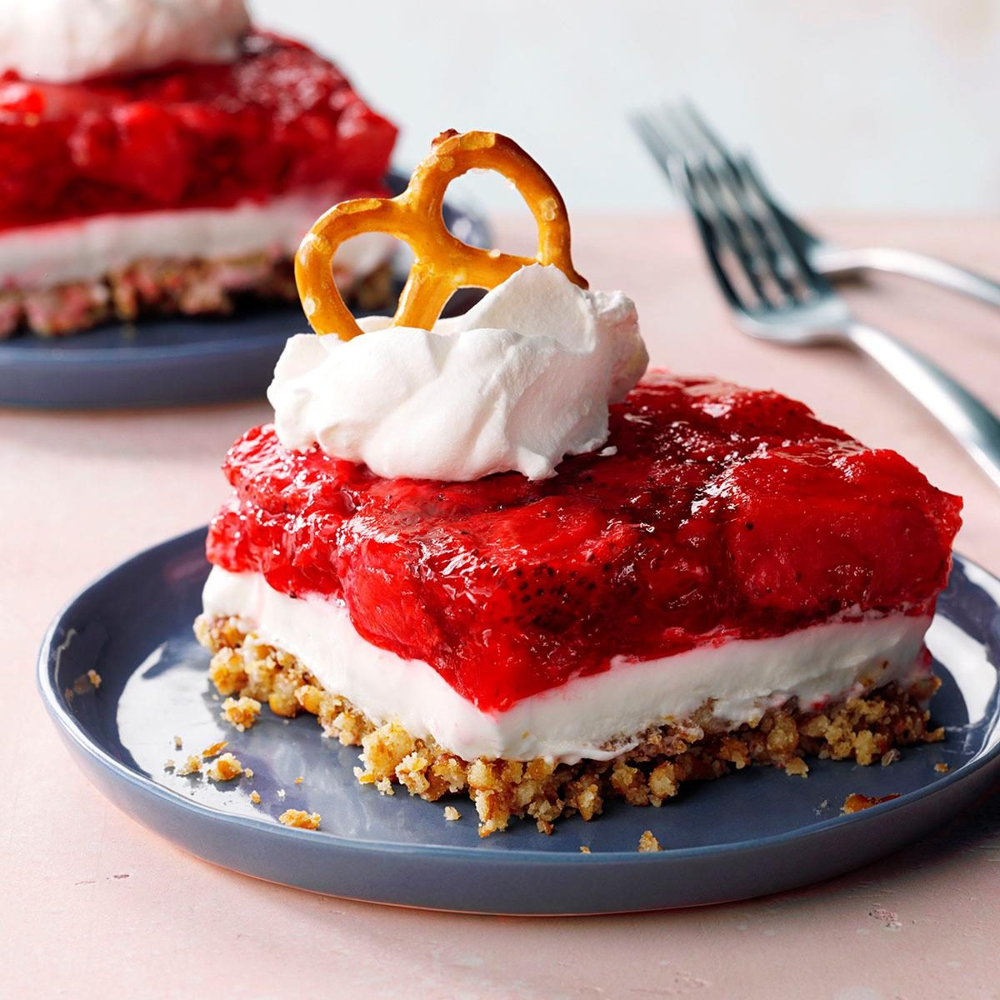

Pretzel Salad
Homepage

Description
A starwberry pretzel salad can be categorically defined as a retro dessert salad with a salty, crunchy pretzel crust,
a creamy cheese filling and a sweet, fruity topping of strawberries and strawberry gelatin
Here's a more detailed description:
Base:
The salad typically starts with a base of crushed pretzels, often combined with melted butter to create a flavorful and sturdy crust.
Filling:
A creamy layer of whipped cream cheese, often mixed with Cool Whip or sweetened condensed milk, provides a rich and tangy
contrast to the salty crust.
Topping:
The final layer features sliced strawberries, often encased in a strawberry-flavored gelatin.
Ingredients
- 1 1/2 cups crushed pretzels
- 3/4 cup butter, melted
- 4 1/2 tablespoons white sugar
- 2 (8 ounce) packages cream cheese, softened
- 1 cup white sugar
- 1 (8 ounce) container frozen whipped topping, thawed
- 2 cups boiling water
- 1 (6 ounce) package strawberry flavored Jell-O
- 1 (16 ounce) package frozen strawberries
Steps
- Gather ingredients, and preheat the oven to 350 degrees F (175 degrees C).
- Mix together pretzels, melted butter, and 4 1/2 tablespoons sugar in a medium bowl until well combined. Press into the bottom of
a 9x13-inch dish
- Press into the bottom of a 9x13 inch pan. Bake for 10 minutes, or until lightly toasted. Set aside to cool completely
- In a medium bowl, beat the sugar and cream cheese until smooth.
- Fold in whipped topping and spread evenly over the cooled crust. Refrigerate until set, about 30 minutes
- Stir together boiling water and gelatin mix in a second large bowl. Mix in frozen strawberries; stir until thawed.
- Pour over cream cheese mixture in the dish. Refrigerate until completely chilled, at least 1 hour.
- Refrigerate until completely chilled, at least 1 hour. Slice and enjoy!